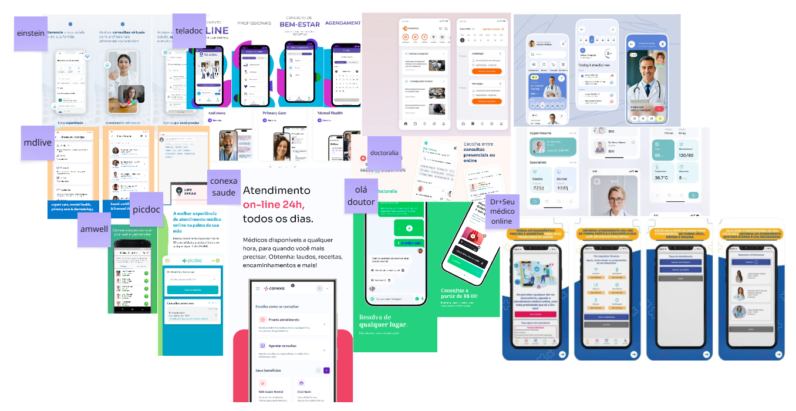
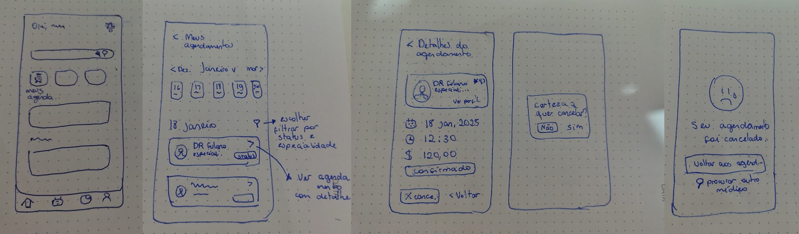
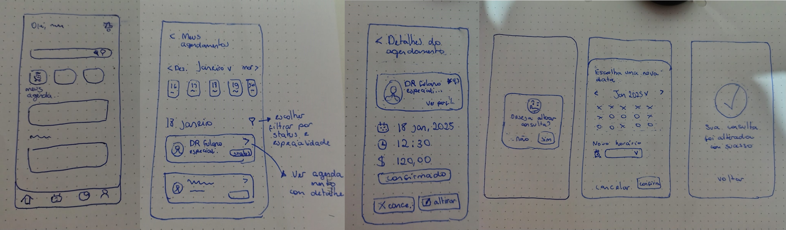

01 — CONTEXTO
Visão geral
O Avitta foi um projeto desenvolvido durante um bootcamp de imersão em UX/UI Design, com o objetivo de investigar os desafios da experiência do usuário em plataformas de telemedicina e propor uma solução digital que atendesse às necessidades de pacientes e profissionais de saúde.
Ao longo do projeto, participei de todas as etapas do processo de design, desde a pesquisa e organização dos dados até a definição de personas, mapeamento da jornada e elaboração dos primeiros esboços da interface.
Em poucas palavras: um aplicativo de telemedicina que torna o atendimento online mais simples e acessível, tanto para quem busca cuidado quanto para quem o oferece.
02 — O DESAFIO
O que precisava ser resolvido?
Embora a telemedicina amplie o acesso aos serviços de saúde e ofereça mais flexibilidade aos pacientes, sua adoção também apresenta desafios relacionados à experiência de uso, à acessibilidade e à confiança no atendimento remoto.
Diante desse cenário, nosso desafio foi compreender as necessidades de diferentes perfis de usuários e identificar oportunidades para tornar a experiência com serviços de telemedicina mais simples, acessível e conveniente.
A investigação considerou tanto a perspectiva dos pacientes quanto a dos profissionais de saúde, buscando compreender suas dificuldades, expectativas e motivações.

03 — PROCESSO
Como cheguei à solução
O desenvolvimento do Avitta seguiu um processo de UX Design que envolveu pesquisa, análise das necessidades dos usuários, estruturação de experiências e exploração de soluções. Cada etapa contribuiu para compreender os desafios da telemedicina e transformar os principais achados em direcionamentos para o produto.
Pesquisa e descoberta
Começamos com uma pesquisa secundária
(Desk Research) para compreender o cenário da
telemedicina, suas aplicações e os desafios relacionados
ao atendimento remoto. Em seguida, utilizamos a
Matriz CSD (Certezas, Suposições e Dúvidas)
para organizar o conhecimento inicial da equipe,
identificar pontos que precisavam de investigação e
direcionar a elaboração de perguntas sobre hábitos,
experiências e dificuldades dos usuários com consultas
remotas.
Técnicas utilizadas:
Desk Research, Matriz CSD e elaboração de perguntas
de pesquisa.
Organização dos achados e compreensão dos usuários
Após a etapa inicial de pesquisa, organizamos e agrupamos
as informações levantadas para identificar padrões de
comportamento, necessidades e expectativas.
A partir dessa síntese, desenvolvemos
três personas, representando diferentes
perfis e perspectivas de usuários em relação à
telemedicina.
Também construímos a Jornada do Usuário
para visualizar suas experiências, identificar possíveis
dificuldades ao longo da utilização do serviço e
compreender melhor os pontos de contato com a plataforma.
Técnicas utilizadas:
Agrupamento e síntese de achados, construção de personas
e mapeamento da jornada do usuário.
Ideação e estruturação dos fluxos
Com as necessidades dos usuários mais claras,
avançamos para a exploração de possibilidades de solução.
Realizamos um benchmarking de produtos
digitais da área da saúde, observando referências de
organização, funcionalidades e experiências de uso.
Em paralelo, estruturamos os
fluxos de navegação da plataforma,
mapeando os caminhos necessários para que os usuários
pudessem realizar suas principais ações. Essa etapa
ajudou a organizar a lógica de funcionamento do produto
antes de avançarmos para a construção das interfaces.
Técnicas utilizadas:
Benchmarking, ideação e mapeamento de fluxos de usuário.
Prototipação e exploração das interfaces
Com os fluxos estruturados, partimos para a exploração
visual das soluções por meio de
esboços de baixa fidelidade (Sketching).
Utilizamos a atividade de Rabiscoframe
para representar ideias de interface, testar possibilidades
de organização dos elementos e discutir diferentes
alternativas para as telas.
Entre os cenários explorados, trabalhamos os fluxos de
cancelamento e alteração de consultas,
representando as etapas e interações necessárias para
realizar essas ações. Os esboços ajudaram a visualizar
a estrutura das interfaces antes de avançarmos para
soluções mais elaboradas.
Técnicas utilizadas:
Sketching, Rabiscoframe e prototipação de baixa fidelidade.
Cancelamento de consulta

Alteração de consulta

04 — SOLUÇÃO
Uma experiência pensada para as pessoas
A proposta do Avitta foi explorar uma experiência digital que tornasse o acesso aos serviços de telemedicina mais simples e organizado. A partir das necessidades identificadas durante a pesquisa, trabalhamos na estruturação de fluxos que permitissem aos usuários gerenciar suas consultas com mais praticidade, considerando diferentes momentos da experiência de atendimento.
Facilidade de uso
Estruturação de fluxos claros para ações como cancelar e alterar consultas, buscando reduzir etapas desnecessárias e facilitar a navegação.
Experiência centrada no usuário
Consideração das diferentes necessidades e expectativas identificadas na pesquisa, utilizando as personas como referência para orientar as decisões de design.
Explore o Avitta
05 — FECHAMENTO
Resultados e aprendizados
O projeto resultou na construção de uma proposta de experiência para uma plataforma de telemedicina, passando pela investigação do contexto, identificação das necessidades dos usuários, definição de personas, mapeamento da jornada e elaboração de fluxos e esboços de interface.
Por ter sido desenvolvido em um bootcamp de imersão, o Avitta também representou uma oportunidade de aplicar, de forma colaborativa, diferentes etapas do processo de UX/UI Design em um mesmo projeto.
Entre os principais aprendizados, destaco a importância de compreender o contexto e as particularidades dos usuários antes de propor soluções, além de transformar informações da pesquisa em decisões mais concretas de estrutura e interação.